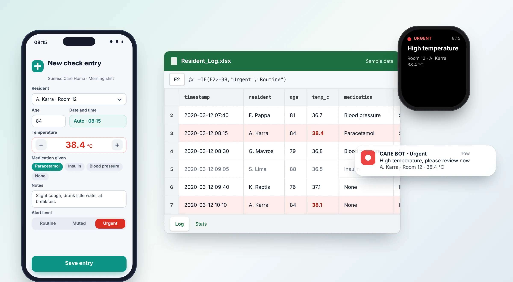

Digital Health Monitoring System, Nursing Home
2020. A digital check form that lets care staff record a resident’s vital data from a phone or a desktop in under a minute, builds a complete history in a structured log, and alerts the clinic director in real time through Slack when something needs attention.
Tasks
- Research
- UX UI design
- Form design
- Workflow automation
- Alert system design
- Data analysis

Overview
In a nursing home, small changes matter: a slightly higher temperature, a missed medication, a note that never reached the next shift. The home needed one place where every check was recorded the same way, and a way for the clinic director to hear about the important ones immediately.
I designed and built the whole chain: the input form, the automatic log, the three-level alert system and the statistics sheet. It runs on tools the staff already know (a form, Excel and Slack), so there was almost nothing to learn.
The challenge
Care staff work fast, on their feet and often with one hand free. Any tool had to be quicker than writing on paper, and had to make the right person aware at the right moment.
One place for every check
Name, age, timestamp, temperature, medication and notes are recorded the same way for every resident, on every shift.
A history that can be found
Management can review the complete history of any resident at any time, without searching through paper.
The right alert, not noise
Routine updates should stay quiet. Urgent ones must be impossible to miss.
Architecture and data flow
Every form submission travels the same short path, without anyone copying data from one place to another.
1 · Entry
A mobile and desktop form. Staff record the check right at the bedside.
2 · Log
Each submission creates a new row in an Excel sheet: a structured log per resident.
3 · Alerts
A chatbot-style Slack message goes to the clinic director, by alert level.
4 · Analysis
Excel charts and statistics support long-term care decisions.
1. The input form
The form was designed for one-handed use: large touch targets, a stepper for the temperature, medication as one-tap chips and an automatic timestamp, so nothing has to be typed that can be chosen.
On a phone, at the bedside
On a tablet or desktop, at the nurse station
Mockups with sample data. Names are fictional.
User experience for the staff
Fast by design: the resident is picked from a list, the time is filled in automatically and the usual medications are one tap away.
Works anywhere: the same form opens on a phone in the corridor or on a desktop at the nurse station.
Alert level in the staff’s hands: the person doing the check decides whether the entry is routine, muted or urgent.
2. The automatic log
When a form is completed, a new row appears in the Excel sheet. The log becomes the single, structured history of every resident, and a formula can flag values outside the safe range.
Why it works
Complete history: filter by resident and the whole story is on one screen.
Nothing retyped: data goes from the form to the log with no manual copying, which removes a whole class of mistakes.
3. The alert system
A bot posts to Slack in a chatbot style, straight to the clinic director. Three alert levels keep the channel calm most of the time, and loud only when it matters.
Routine check-up
A short confirmation with a soft chime. It tells the director the round was done and everything is normal.
Muted
The entry is saved and posted silently. Nothing buzzes, and it is there in the log when someone looks.
Urgent
A distinct sound and a clear message with the resident, room and reading. Impossible to confuse with a routine update.
The same urgent alert in Slack, as a push notification on the phone and on a smartwatch
Design value
Customizable: the messages, the sounds and the levels can be adjusted to how the home works.
Reaches the director anywhere: a phone or a watch is enough, with no need to open the spreadsheet.
4. Charts and statistics
Excel is used for more than record-keeping. The same log feeds charts that show how a resident’s temperature moves over a week, how busy each shift is and how many alerts of each kind were raised. Patterns become visible early, which supports better long-term care decisions.
Statistics sheet mockup, with sample data
Result
Faster response
Urgent readings reached the clinic director the moment they were saved, not at the next handover.
Greater accuracy
Structured fields and automatic logging replaced handwriting and manual copying.
Better elderly care
A full history and clear statistics made it easier to notice changes and plan care.
Related project
SKOE 48-Hour Licence Monitor: the same approach for a national federation →